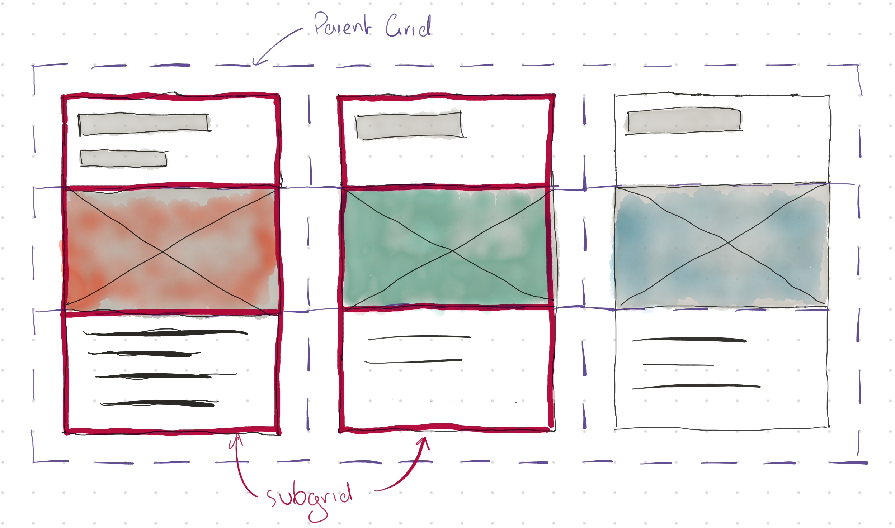

图解CSS: Grid布局（Part15）
作者：大漠 日期：2021-09-05 点击：552
特别声明：如果您喜欢小站的内容，可以点击申请会员进行全站阅读。如果您对付费阅读有任何建议或想法，欢迎发送邮件至: airenliao@gmail.com!或添加QQ：874472854(^_^)
* 文本为付费内容（4.99元），您已获得全文阅读权限
当 CSS Grid 布局在 2017 年最初发布时，设计师和开发人员为二维布局和优化布局系统而设计时感到非常兴奋。 通过前面的学习，我们也领略到了网格布局的魅力，CSS 网格让我们可以轻松地做许多以前做不到的事情。其中一个较大的限制是，嵌套的网格不能参与其父网格的大小调整。这也是一个从一开始就被认为很重要的功能，然而，由于其复杂性，一度曾被废弃的子网格被推迟到 CSS Grid布局模块的 Level 2 中。
一段时间以来，关于subgrid的使用情况、如何实现它的问题有很多讨论，甚至还有一些关于是否需要它的辩论。很多讨论都是围绕着另外两种可以处理许多与subgrid相同问题的方法：嵌套网格 和 display: contents。接下来，我们将花一些篇幅来阐述嵌套网格和subgrid，即我们将了解哪些是相似的，哪些是subgrid与嵌套网格区别？以及阐述在一些非常有效的情况下，子网格是真正需要的，而在另一些情况下，它并不是严格需要的，但会带来一个更简洁的解决方案。
那我们先从嵌套网格开始。
什么是嵌套网格
CSS 中的嵌套网格有点类似于嵌套表格。简单地说，任何网格项目都可以成为一个网格容器，也就是说，只需要在网格项目上显式设置 display 的值为 grid 或 inline-grid 即可实现一个嵌套网格。比如下面这个示例：
<!-- HTML -->
<div class="grid__container">
<div class="grid__item"></div>
<div class="grid__item grid__container-subgrid">
<div class="grid__item"></div>
</div>
<div class="grid__item"></div>
</div>
/* CSS */
/* 创建父网格容器 */
.grid__container {
display: grid;
grid-template-columns: 1fr 2fr 3fr 2fr 1fr;
grid-template-rows: 1fr 2fr 2fr 1fr;
gap: 1rem;
}
/* 创建嵌套网格 */
.grid__container--subgrid {
grid-column: 2 / 5;
grid-row: 2 / 4;
display: grid;
grid-template-columns: 2fr 3fr 2fr;
grid-template-rows: repeat(3, 1fr);
gap: 1rem;
}
上面的示例在 .grid__container 创建了一个 5 x 4 (五列四行)的网格，并且在网格项G，也就是.grid__container--subgrid 创建了一个 3 x 3（三列三行）的网格，并且 .grid__container--subgrid 网格容器同时又是 .grid__ccontainer 网格中的第七个网格项目（网格项目G）：
上图中，白色网格线构建的是父网格（.grid__container），红色网格线构建的是子网格（.grid__container--subgrid），这两个网格是相互嵌套的关系。其中 .grid__container--subgrid 网格也被称为嵌套网格。
这是两个完全不同的网格，父网格和嵌套网格都有自己的独立的网格系统，比如网格线编号，网格轨道尺寸等。也就是说，在父网格和嵌套网格中都可以显式使用 grid-template（即其子属性grid-template-columns、grid-template-rows或grid-template-areas）或 grid-auto-row和grid-auto-column。也可以使用grid-column、grid-row和grid-area等属性在各自网格系统中放置网格项目。
当然，我们也可以采用下面的方式，完全嵌套一个与父网格一模一样的子网格：
.grid__container {
display: grid;
grid-template-columns: 1fr 2fr 3fr 2fr 1fr;
grid-template-rows: 1fr 2fr 2fr 1fr;
gap: 1rem;
}
/* 创建嵌套网格 */
.grid__container--subgrid {
grid-column: 2 / 5;
grid-row: 2 / 4;
display: inherit;
grid-template-columns: inherit;
grid-template-rows: inherit;
gap: inherit;
}
使用开发者审查工具，你可以看到白色网格（父网格）和红色网格（子网格）都是 5 x 4（五行四列）网格，不同之处只是它们的网格轨道尺寸不同：

如果在父网格的grid-template-columns和grid-template-rows 显式定义了网格线名称，并且使用 grid-template-areas 定义了网格区域。同样可以使用 inherit 将父网格网格线名称、网格区域名称复制过来：
.grid__container {
display: grid;
grid-template-columns:
[header-start nav-start footer-start] fit-content(100px) [nav-end main-start] 1fr [main-end aside-start] fit-content(100px) [header-end aside-end footer-end];
grid-template-rows:
[header-start] 80px [header-end nav-start main-start aside-start] 1fr [nav-end main-end aside-end footer-start] 60px [footer-end];
grid-template-areas:
"header header header"
"nav main aside"
"footer footer footer";
gap: 1rem;
}
.grid__container--subgrid {
display: inherit;
grid-template-columns: inherit;
grid-template-rows: inherit;
grid-template-areas: inherit;
gap: inherit;
}
header {
grid-area: header;
}
nav {
grid-area: nav;
}
main {
grid-area: main;
}
aside {
grid-area: aside;
}
footer {
grid-area: footer;
}
子网格（被嵌套的网格）继承了父网格所有网格系统的相关参数：
从上面的示例中，不难发现嵌套网格布局的缺陷。换句话说，嵌套网格最大的问题是， 嵌套网格是独立于父网格和相互之间的，即 嵌套网格是独立的一个网格，但又是父网格的的一个网格项目。这也意味着嵌套网格不从父网格中获取它们的轨道尺寸，这使得嵌套网格项目与父网格的排列更加困难。我们嵌套网格内所做的更改不会涉及父级容器，因此，在布局时需要考虑两个独立的网格，出错率就更大，维护更难，效率也变得更低。
嵌套网格还存在的一个问题就是它的灵活性，在响应式设计中会产生一个问题，即里面的元素溢出了网格容器元素的边界之外。
什么是子网格（subgrid）
由于嵌套网格布局存在一定的缺陷，同时为了避免嵌套网格给布局带来的不利因素，CSS Grid 布局模块 Level 2 新增了一个 subgrid （子网格）的新功能。 subgrid 是 grid-template-rows 和 grid-template-columns 属性的一个值。即：
grid-template-rows: subgrid <line-name-list>?
grid-template-columns: subgrid <line-name-list>?
<line-name-list> = [ <line-names> | <name-repeat> ]+
当 grid-template-rows 、 grid-template-columns 或两者都显式设置了subgrid的值，嵌套网格将采用其父网格定义的网格轨道。子网格的项目将参与任何与父网格共享的网格轨道的内在尺寸计算。从本质上讲，子网格提供了通过嵌套元素向下传递网格参数的能力，以及将其基于内容信息向上传递到父网格的能力。
如果在subgrid 后面指定了 <line-name-list> 参数的话，将允许对与父网格共享的网格线进行本地命名：如果给出了<line-name-list>，指定的<line-name>（网格线名称）将被分配给子网格的显式网格线，每条一个，从第一条网格线开始，并且多余的网格线名称会被忽略。
我们把上面的嵌套网格稍微调整一下，先来感受一下子网格（subgrid）与嵌套网格的差异：
.grid__container {
display: grid;
grid-template-columns: 1fr 2fr 3fr 2fr 1fr;
grid-template-rows: 1fr 2fr 2fr 1fr;
}
.grid__container--subgrid {
grid-column: 2 / 5;
grid-row: 2 / 4;
display: inherit;
grid-template-columns: subgrid;
grid-template-rows: subgrid;
gap: inherit;
}
使用 Firefox 浏览器，查看上面的示例，你将看到下图这样的效果：
.grid__container--subgrid 是一个subgrid（子网格）， 将为它所跨越的区域采用网格容器的网格轨道（行和列）。在这个示例中，垂直方向有三列，水平方向有两行（grid-row和grid-column属性定义）。
.grid__container {
display: grid;
grid-template-columns: 1fr 2fr 3fr 2fr 1fr;
grid-template-rows: 1fr 2fr 2fr 1fr;
gap: 1rem;
}
.grid__container--nested,
.grid__container--subgrid {
grid-column: 2 / 5;
grid-row: 2 / 4;
gap: inherit;
}
.grid__container--nested {
display: inherit;
grid-template-columns: inherit;
grid-template-rows: inherit;
}
.grid__container--subgrid {
display: inherit;
grid-template-columns: subgrid;
grid-template-rows: subgrid;
}
嵌套网格和子网格的区别
在使用网格布局时，可以嵌套网格，一个网格项目可以通过在其上设置 display 为 grid 或 inlie-grid，也可以像上面示例那相设置 inherit 而成为一个网格容器。在该嵌套网格上定义的轨道与父网格没有关系。父网格和嵌套网格都是独立的网格。即使嵌套网格继承父网格的参数（比如轨道），它们依旧是独立的。
如果嵌套网格被定义为一个子网格，即在 grid-template-columns 或 grid-template-rows 设置了值为 subgrid。比如上面示例，在.grid__container--subgrid 上同时设置了grid-template-columns和grid-template-rows值为subgrid，并且该网格也是父网格的一个网格项目，显示使用grid-column 和 grid-rows 让该网格项目跨越三列两行。而它的子元素（子网格中的网格项目）将在合并区域（轨道）上布局。
如下图所示，左侧是一个嵌套网格，右侧是了个子网格。白色网格线构建是一个父网格（也称主网格），红色网格线是嵌套网格，绿色网格线是子网格。从下图中不难发现，左侧的嵌套网格和父网格是两个独立的网格，右侧的子网格和父网格是有关系的，子网格只是父网格的一部分，它被包含在同一个布局中，使用相同的网格轨道和网格线。
我们为什么需要子网格
一个值得深思的问题是，我们可以通过 display 的 grid（或 inline-grid）创建嵌套网格，那为什么还需要 subgrid 属性呢？
前面我们也多次提到过，通过display 的 grid 属性构建子网格存在的问题，我们所做的任何改变或者在网格容器内构造的任何元素都不会为自己引用父容器。在一个网格中构建一个网格会产生问题，因为元素开始独立行动，因此我们现在不得不必要地管理两个独立的网格。
在 Level 2 网格之前，传统使用的嵌套网格的另一个问题是，它对响应式网页设计没有应有的灵活性。由于今天市场上充斥着不同的移动设备屏幕，响应性是至关重要的。创建一个嵌套网格有时会使里面的元素溢出网格容器元素的边界之外。因此，需要一个新的属性来满足 Web 开发者的需求。这个新属性就是 subgrid。
我们用下面这样的示例来阐述为什么需要subgrid。
上图是我们常见的一个布局模式，一排有多个卡片。每张卡片有一个标题、缩略图和正文。卡片在设计的时候，通常都是完美的，比如说标题长度是确定好的、图片高度是一致的、正文内容是相同的。然而，在生产过程中，事情往往会有一些不同。标题和正文的长度在不同的卡片之间会有很大的差异。这可能会破坏整个行中漂亮均匀的卡片的美感。
有一些方法可以解决这个问题，你可以限制允许使用的内容，在元素上设置一个最小高度或高度，以保持对齐，但这些都限制了内容，或者会导致视觉美感被牺牲掉。
你可能相知道 Flexbox 是否是一个可能的解决方案。它们可以让你实现大部分需求，但你可能需要牺牲设计和（或）语义来达到预期的结果。你可以考虑嵌套网格，但问题是每个单独嵌套的网格都不知道其他网格的大小，这意味着轨道不会对齐，这与 Flexbox 的情况相似。
虽然卡片排列正确，但设计感就差了。
如果我们使用subgrid呢？subgrid让嵌套的网格容器能够继承父网格轨道的尺寸。如果不继承父网格轨道的尺寸，网格项目就会有独立的尺寸，这与前面提到的 Flexbox 或嵌套网格的例子相同。
由于父网格为三个轨道提供了尺寸，嵌套的子网格将继承父轨道的尺寸，并调整为整个行的最大网格单元。这样一来，项目就排成了一排！

比如：
body {
display: grid;
grid-template-columns: repeat(auto-fill, minmax(min(100%, 300px), 1fr));
gap: 1rem;
}
.card {
display: grid;
grid-template-rows: subgrid;
grid-row: span 3;
}
在Firefox浏览器中可以看到subgrid的效果：
**注意，到目前为止，仅 Firefox 浏览器支持
subgrid属性！ **
如何创建子网格
CSS Grid Layout Module Level 2 为 grid-template-columns 和 grid-template-rows 属性引入了两个新值，允许我们在现有的网格容器中建立一个子网格：
grid-template-columns: subgrid <line-name-list>?
grid-template-rows: subgrid <line-name-list>?
关键词 subgrid 表示，嵌套的网格在沿相关轴线所占的部分将使用与它的父网格相同的尺寸。因此，子网格的项目将根据其父网格的轨道尺寸来放置和确定大小。子网格可以沿单个轴（行或列）或沿两个轴采用其父网格的轨道尺寸。
当一个元素的display 值为 grid 或 inline-grid时，就会建立一个独立的网格格式化上下文。一个子网格的内容参与其父网格的格式化上下文，而不会建立一个新的网格格式化上下文。
<line-name-list> 的语法定义如下：
<line-name-list> = [ <line-names> | <name-repeat> ]+
<line-names> = '[' <custom-ident>* ']'
<name-repeat> = repeat( [ <positive-integer> | auto-fill ], <line-names>+)
如果你在使用网格时使用过 repeat() 函数，有一点需要注意的是，在子网格的背景下使用它时，会有一点不同，因为在这种情况下，只有网格线名被重复。
子网格在子网格的轴上不会有任何隐含的网格轨道，因为它的网格轨道与父网格的轨道一致。子网格上的网格线编号从1开始，并不跟随父网格的网格线编号：
然而，如果父网格上有任何网格线名称（显式命名的网格线名称），它们将被子网格继承，但也可以提供子网格自己的网格线名称。父网格将不能使用子网格线命名的网格线名称。它们它们只适用于子网格。
比如下面这个示例：
<!-- HTML -->
<div class="grid__container">
<nav class="sidebar">Nav Content</nav>
<main class="content">
<article>Article Content</article>
<aside>Aside Content</aside>
</main>
</div>
我们可以通过下面的 CSS 让 main 元素内的子元素参与到父网格中，同时也可以为子网格的列分配自己的网格线名称：
.grid__container {
display: grid;
grid-template-columns: [nav-start] fit-content(200px) [nav-end content-start] 1fr 1fr [content-end];
grid-template-rows: [nav-start content-start] 1fr [nav-end content-end];
gap: 1rem;
}
.content {
grid-column: content-start / content-end;
grid-row: content-start / content-end;
display: grid;
grid-template-columns: subgrid [article-start] [article-end aside-start] [aside-end];
grid-template-rows: subgrid [article-start aside-start] [article-end aside-end]
}
article {
grid-column: article-start / article-end;
}
aside {
grid-column: aside-start / aside-end;
}
在子网格上声明的网格线名称的数量应该与子网格跨越父网格的行数一致。任何多余的名字都会被忽略。
行轴上的子网格
我们将对一个元素（网格项目）的 grid-template-rows 属性设置为 subgrid，并且定义了明确的列轨道。因此，列轨道的行为与普通的嵌套网格一样，但行与子网格所跨越的两个轨道相联系。
.grid__container {
display: grid;
grid-template-columns: repeat(6, 1fr);
grid-template-rows: repeat(3, minmax(100px, auto));
gap: 1rem;
}
.grid__container--subgrid {
grid-column: 2 / 6;
grid-row: 2 / 4;
display: inherit;
grid-template-columns: repeat(3, 1fr);
grid-template-rows: subgrid;
gap: inherit;
}
子网格（.grid__container--subgrid）在父网格中跨越四列两行（即grid-column: 2 / 6 和 grid-row: 2 / 4），它的列轨道是 grid-template-columns 属性指定的三列，是独立的列网格轨道，它与父网格列轨道是不一致的。而 grid-template-rows 属性的值是 subgrid，它的行网格轨道和父网格相同（跨越区域对应的行网格轨道）。
列轴上的子网格
把上面的示例稍作调整，将子网格（.grid__container--subgrid）的 grid-template-columns 值设置为 subgrid。
.grid__container {
display: grid;
grid-template-columns: repeat(6, 1fr);
grid-template-rows: repeat(3, minmax(100px, auto));
gap: 1rem;
}
.grid__container--subgrid {
grid-column: 2 / 6;
grid-row: 2 / 4;
display: inherit;
grid-template-columns: subgrid;
grid-template-rows: repeat(3, 1fr);
gap: inherit;
}
这个刚好和上面的示例相反，子网格的列轨道继承的父网格的列轨道，而行网格轨道是自己独立的网格轨道：
两个轴上的子网格
两个轴上的子网格指的是在子网格（.grid__container--subgrid）的 grid-template-columns 和 grid-template-rows 属性上同时设置值为 subgrid：
.grid__container {
display: grid;
grid-template-columns: repeat(6, 1fr);
grid-template-rows: repeat(3, minmax(100px, auto));
gap: 1rem;
}
.grid__container--subgrid {
grid-column: 2 / 6;
grid-row: 2 / 4;
display: inherit;
grid-template-columns: subgrid;
grid-template-rows: subgrid;
gap: inherit;
}
当子网格的 grid-template-columns 和 grid-template-rows 属性值都是 subgrid 时，子网格的列轨道和行轨道继承了子网格在父网格跨越区域的列轨道和行轨道。比如上例，子网格构建了一个显式的 4 x 2 网格。
当子网格中的网格项目数量刚好和构建的网格中单元格数量相匹配时，网格项目的放置将按自动放置算法来放置：
当子网格中的网格项目数量超过子网格中单元格数量时，网格项目会重叠在一起，比如示例中的 网格项目 G5 和 网格项目G9 重叠在一起：
当子网格中的网格项目数量少于子网格中单元格数量时，网格中会留出空白网格区域：

子网格中没有隐式的网格
如果你需要自动放置网格项目，并且不知道有多少个网格项目，那么在创建子网格时就要注意，因为这将阻止创建额外的行来容纳这些网格项目。
比如下面这个示例，父网格（.grid__container）是一个 9 x 4 的网格，并且在子网格（.grid__container--subgrid）的 grid-template-columns 和 grid-template-rows 设置了 subgrid 值，同时该网格项目使用 grrid-column: 2 / 7 和 grid-row: 2 / 4 跨越父网格多列和多行。另外，在子网格中的网格项目数量超过了子网格的单元格数量：
.grid__container {
display: grid;
grid-template-columns: repeat(9, 1fr);
grid-template-rows: repeat(4, minmax(100px, auto));
gap: 1rem;
}
.grid__container--subgrid {
grid-column: 2 / 7;
grid-row: 2 / 4;
display: inherit;
grid-template-columns: subgrid;
grid-template-rows: subgrid;
gap: inherit;
}
在子网格中，我们有12个网格项目试图自动放置在十个网格单元格中。由于子网格在两个维度上，额外的两个网格项目无处可放，所以它们被放置在网格的最后一个轨道。
正如上图所示，子网格项目中的网格项目12、网格项目11 和 网格项目6 重叠在一起。
如果我们去掉子网格（.grid__container--subgrid）的 grid-template-rows的值，我们就可以创建隐式的网格轨道，尽管这些网格轨道不会与父网格轨道一致，但需要多少就会创建多少。
子网格中的间距
如果在父网格中指定了 gap、column-gap 或 row-gap，那么这将被传递到子网格中，因此子网格轨道之间的间距将与像网格轨道之间间距相同：
.grid__container {
display: grid;
grid-template-columns: repeat(4, 1fr);
grid-template-rows: repeat(3, minmax(100px, auto));
gap: 1rem;
}
.grid__container--subgrid {
grid-column: 2 / 5;
grid-row: 2 / 4;
display: inherit;
grid-template-columns: subgrid;
grid-template-rows: subgrid;
}

但是在某些情况下，你可能希望子网格的轨道之间的间距要和父网格轨道之间的间距不同，甚至是子网格中轨道之间不存在间距，或者是父网格轨道之间不存在间距，而子网格轨道之间有一定的间距。那么可以显式在父网格和子网格中设置gap、column-ga 或 row-gap 不同的值：
.grid__container {
display: grid;
grid-template-columns: repeat(4, 1fr);
grid-template-rows: repeat(3, minmax(100px, auto));
gap: 2rem;
}
.grid__container--subgrid {
grid-column: 2 / 5;
grid-row: 2 / 4;
display: inherit;
grid-template-columns: subgrid;
grid-template-rows: subgrid;
gap: 1rem;
}
正如上面示例所示，父网格轨道之间的间距是2rem（在父网格中显式设置了gap的值为2rem），而子网格轨道之间的间距是 1rem（在子网格中显式设置了gap的值为1rem）：
子网格行为
一个子网格在浏览器中的表现行为大多数情况下就像一个正常的网格容器，除了以下这些情景。
①：放置子网格会在它的子网格轨道和它在父网格中所跨越的轨道之间建立一种对应关系。这样，子网格和它的父网格之间共享的网格线就形成了子网格的显式网格，而它的轨道大小则由父网格来决定。
②：子网格在子网格维度中（行轴和列轴）的显式轨道的数量总是与它在其父网格中所跨越的网格轨道的数量相对应。如果子网格在子网格维度中的网格跨度是确定的，那么每个子网格维度中的显式轨道数量就取自其在该维度中使用的网格跨度（不管其grid-template-*属性如何）；如果它的网格跨度是不确定的，那么它所使用的网格跨度就是从它的 grid-template-* 属性为该轴指定的显式轨道的数量中提取，并以1为限。
③：子网格的网格放置属性（比如grid-row、grid-column和grid-area等）和它们使用的网格线编号都是针对子网格所覆盖的网格线，与子网格外的网格线被排除在其显式网格之外完全一致。例如，网格线的数字编号从子网格的第一条网格线开始编号，而不是从父网格的第一条网格线开始。子网格的网格线编号和位置规则服从子网格自己的书写模式（writing-mode），就像对一个嵌套的独立网格那样。
④：由于子网格可以在其内容被放置之前被放置，子网格的网格线会自动接收在父网格的相应行上明确指定的网格线名称。这些名称是对子网格上本地指定的任何网格线名的补充。
⑤：当一个子网格与父网格中由 grid-template-areas 属性声明创建的命名网格区域重叠时，隐式分配的网格线名会被分配到子网格中代表父网格的命名区域。
注意，如果一个命名的网格区域只是部分地与子网格重叠，其隐式分配的网格线名称将被分配到子网格的第一和（或）最后一行，这样一个命名的网格区域就存在，代表子网格的部分重叠区域；因此子网格的网格线名分配可能并不总是与父网格的网格线名分配完全一致。
这些名称也是对子网格上指定的任何网格线补充。
比如下面这个示例，父网格的四个列轨道既有显式的网格线名称，也有由grid-template-areas 生成的隐式网格线名称：
<!-- HTML -->
<div class="outer">
<div class="grid__item">A</div>
<div class="middle">
<div class="grid__item">B1</div>
<div class="inner">
<div class="grid__item">B21</div>
<div class="grid__item">B22</div>
</div>
</div>
<div class="grid__item">C</div>
<div class="grid__item">D</div>
</div>
/* CSS */
.outer {
display: grid;
grid-template-columns: [outer-edge] 1fr [main-start] 2fr [center] 3fr max-content [main-end];
grid-template-areas: "gutter info info photos";
gap: 1rem;
}
.middle {
grid-column: main-start / main-end;
display: grid;
grid-template-rows: subgrid;
grid-template-columns: subgrid;
}
.inner {
grid-column: center / -1;
display: grid;
grid-template-rows: subgrid;
grid-template-columns: subgrid;
}
每个网格对应的网格线名称：
.outer = [outer-edge gutter-start] [gutter-end info-start main-start] [center] [info-end photos-start] [main-end photos-end]
.middle = [info-start main-start] [center] [info-end photos-start] [main-end photos-end]
.inner = [center info-start] [info-end photos-start] [main-end photos-end]
请注意，所有显式分配的网格线名称都直接继承给.inner，但隐式分配的网格线名称是根据每个子网格与原始命名的网格区域的重叠度计算出来的。
⑥：子网格在子网格的维度上没有任何隐式的网格轨道。当显式网格没有足够的网格线时，假设的隐式网格线照常被用来解决网格放置问题；但是每个网格项的网格区域被钳制在子网格的显式网格上。
例如，如果一个跨度（span）为 1 的子网格有一个网格项目，并且该网格项目的 grid-column值为2 / span 3，那么这个网格项目就会被强制放入（并限制在）子网格中的第一个（唯一）轨道。
.grid__container {
display: grid;
grid-template-columns: repeat(5, 1fr);
grid-template-rows: repeat(2, minmax(100px, auto));
gap: 1rem;
}
.grid__container--subgrid {
display: inherit;
grid-template-columns: subgrid;
grid-template-rows: subgrid;
}
.grid__container--subgrid .grid__subitem {
grid-column: 2 / span 3;
}

⑦：子网格本身在其父网格中是一个普通的网格项目，但在子网格维度中，它的作用就好像是完全空的轨道尺寸一样。
⑧：子网格自己的网格项目参与子网格维度的大小，并在这些维度上与它对齐。在这个过程中，子网格的margin、padding 和 border 的总和被作为额外的一层（可能是负的）边距应用到这些边缘的项目上。这层额外的边距通过多层次的子网格累积起来。
例如，我们创建了一个 3 x 3 的父网格：
.grid__container {
grid-template-columns: 200px auto 200px;
}
如果一个子网格跨越了最后两个列轨道，那么它的前两列就对应着父网格的最后两列，任何定位在这些轨道上的网格项目都会参与到父网格的大小。具体来说，定位在子网格第一个轨道上的网格项目会影响到父网格中间轨道的自动调整：
.grid__container--subgrid {
grid-column: 2 / span 2;
}
.grid__container--subgrid > :first-child {
grid-column: 1;
}
如果子网格有margin、padding 和 broder，这些 margin、padding 和 border 的大小也会影响子网格尺寸。例如，如果子网格有 100px 的 padding：
.grid__container--subgrid {
padding: 100px;
}
然后，子网格的第一个轨道中的网格项目就像它有一个额外的 100px 的上、左、下边距一样，影响到父网格的轨道的大小和网格项目自身的位置。
.grid__container {
display: grid;
grid-template-columns: 200px auto 200px;
grid-template-rows: repeat(2, minmax(100px, auto));
gap: 1rem;
}
.grid__container--subgrid {
grid-column: 2 / span 2;
display: inherit;
grid-template-columns: subgrid;
gap: 1rem;
padding: 100px;
}
.grid__container--subgrid > :first-child {
grid-column: 1;
}
同时，子网格的轨道之间间距（row-gap或column-gap）和其父网格的gap之间的差额的一半，作为额外的一层（潜在的负）边距应用于不在这些边缘的项目。这层额外的“边距”也通过多层子网格累积起来。一个正常的值表示子网格与它的父网格有相同大小的gap，也就是说，应用的差异为零。
注意，最终的结果是，父网格的轨道将按照指定的大小，而子网格的沟槽将在视觉上与父网格的沟槽居中对齐。
通过下面的示例来展示父网格和子网格沟槽之间的变化。假设我们一个 width 为 300px 的父网格，该网格列被指定为 100px 1fr，且轨道之间的间距为 50px。同时有一个子网格跨越了两列：
<!-- HTML -->
<div class="grid__container">
<div class="grid__item">A</div>
<div class="grid__item">B</div>
<div class="grid__item grid__container--subgrid">
<div class="grid__subitem grid__item">C1</div>
<div class="grid__subitem grid__item">C2</div>
</div>
</div>
/* CSS */
.grid__container {
width: 300px;
display: grid;
grid-template-columns: 100px 1fr;
gap: 50px;
}
.grid__container--subgrid {
grid-column: 1 / span 2;
display: inherit;
grid-template-columns: subgrid;
}
如果子网格的 column-gap 值是 normal（或 50px）：
- 子网格中的网格项目C1的列轨道尺寸是
100px - 子网格中的网格项目C2的列轨道尺寸是
150px（即1fr = 300px - 100px - 50px = 150px） - 子网格中的列轨道之间的间距继承了父网格的轨道之间的间距
50px
如果子网格的 column-gap 值是 0px：
- 子网格中的网格项目 C1 的列轨道尺寸是
125px，就像有一个-25px（即(0 - 50px) / 2 = -25px） 的margin-right - 子网格中的网格项目 C2 的列轨道尺寸是
175px（即1fr = 300px - 125px = 175px），就像有一个-25px的margin-left - 子网格中列轨道之间的间距为
0，因为在子网格中重置了column-gap值为0
如果子网格的 column-gap 的值是 20px：
- 子网格中的网格项目 C1 的列轨道尺寸是
115px，就像有一个-15px（即(20px - 50px) / 2 = 15px） 的margin-right - 子网格中的网格项目 C2 的列轨道尺寸是
165px，就像有一个-15px的margin-left - 子网格中列轨道之间的间距为
20px，因为在子网格中重置了column-gap值为20px
如果子网格的 column-gap 的值是 80px：
- 子网格中的网格项目 C1 的列轨道尺寸是
85px，就像有一个15px（即(80px - 50px) / 2 = 15px）的margin-right - 子网格中的网格项目 C2 的列轨道尺寸是
135px，就像有一个15px的margin-left - 子网格中列轨道之间的间距为
80px，因为在子网格中重置了column-gap值为80px
上面示例中的margin-left和margin-right是拿子网格中网格项目和父网格项目中的同轨道中相比：
⑨：对于一个非空的子网格的每个边缘，为了考虑子网格在该边缘的margin、padding和border，在跨入最靠近子网格该边缘的占用轨道的项目集合中，每个跨度大小的假设项目被贡献给轨道大小算法。这个项目的尺寸取自每个跨度大小中最大的项目的尺寸，并且在该边缘（或者两个边缘，如果它恰好是两边最极端的项目，并且也是最小的跨度大小）被子网格自身的margin、border和padding扩展。同样地，假设项目的跨度取自同一真实项目的跨度，并通过它与相关子网格的边缘之间的空轨道数量进行扩展。
⑩：子网格在其子网格的维度上总是被拉伸的，它的 align-self、justify-self属性被忽略，任何指定的width和height也被忽略。
⑪：在布局上，子网格的网格总是与父网格的相应部分对齐，在子网格的维度上，它的align-content、justify-content属性也被忽略。
⑫：overflow属性确实适用于子网格，因此子网格中溢出的内容可以被滚动到视图中。（注意，滚动的行为不影响布局）。
子网格使用示例
来看几个 subgrid 常见的示例。首先来看一个卡片相关的示例。我们平时在开发中时常能看到像下图这样的卡片效果：
对于这样的一个 UI 效果，我们使用subgrid可以很轻易的实现。先来看其 HTML：
<div class="grid">
<div class="subgrid">
<h2>Awesome speaker</h2>
<img src="https://picsum.photos/200/200?random=1" alt="" />
<p>Chocolate bar ...</p>
<span>...</span>
<span>...</span>
<span>...</span>
</div>
<!-- subgrid -->
</div>
父网格和子网格轨道如下图所示：
上图中白色网格线是父网格，红色网格线是子网格：
/* 定义父网格 */
.grid {
display: grid;
grid-template-columns: minmax(7em, 12em) max-content max-content max-content 1fr;
row-gap: 2em;
}
/* 定义子网格 */
.subgrid {
grid-column: 1 / -1;
display: grid;
grid-template-columns: subgrid;
grid-template-rows: min-content max-content min-content;
column-gap: 1em;
}
/* 子网格项目放置 */
h2 {
grid-column: 1 / -1;
}
p {
grid-column: 2 / -1;
}
img {
grid-row: 2 / -1;
align-self: center;
}
效果如下：
再来看一个 @Michelle Barker 在 Codepen 上写的子网格悬浮状态高亮的效果：
效果如下：
前面示例中，我们演示了卡片的效果。这里再向大家演示一个卡片效果。在这个效果中我们采用了嵌套网格和子网格两种方式。在不支持subgrid浏览器中使用嵌套网格，反之使用subgrid。
<!-- HTML -->
<div class="cards-container">
<div class="card">
<div class="card-header-wrapper">
<h2 class="card-title">The cosmos awaits</h2>
<h4 class="card-subtitle">Great turbulent clouds</h4>
<div class="card-avatar-wrapper">
<img class="card-avatar" src="..." alt="">
</div>
</div>
<div class="card-photo-wrapper">
<img class="card-photo" src="..." alt="">
</div>
<p class="card-text">With pretty stories for which there's little good evidence star stuff harvesting star light circumnavigated invent the universe billions upon billions of brilliant syntheses.</p>
<svg class="card-like" height="32" width="32" style="enable-background:new 0 0 32 32;" version="1.1" viewBox="0 0 512 512" xml:space="preserve" xmlns="http://www.w3.org/2000/svg">
<path d="M340.8 98...." />
</svg>
<button class="card-button">More</button>
</div>
<!-- Card -->
</div>
支持 subgrid 会采用下面的 CSS：
.cards-container {
display: grid;
grid-template-columns: repeat(3, [col-start] fit-content(9rem));
grid-auto-rows: fit-content(12rem) minmax(10rem, 14rem) auto auto;
gap: 0.5rem;
justify-content: center;
}
.card {
grid-column: span 3;
grid-row: span 4;
display: grid;
grid-template-columns: subgrid [card-start][button-start][col][card-end button-end];
grid-template-rows: subgrid [title-start][title-end photo-start] [photo-end text-start] [text-end button-start] [button-end];
row-gap: 0;
}
.card-header-wrapper {
grid-column: card;
grid-row: title;
display: grid;
grid-template-columns: subgrid;
grid-template-rows: fit-content(6rem) fit-content(6rem);
grid-template-areas: "subtitle subtitle avatar" "title title title";
align-items: end;
}
.card-title {
grid-area: title;
font-size: 1.25rem;
}
.card-subtitle {
grid-area: subtitle;
}
.card-avatar-wrapper {
grid-area: avatar;
align-self: start;
justify-self: end;
}
.card-photo-wrapper {
grid-column: card;
grid-row: photo;
}
.card-text {
grid-column: col-start / span 3;
grid-row: text;
}
.card-like {
grid-column: 1/2;
grid-row: button;
align-self: end;
}
.card-button {
grid-area: button;
}
使用 CSS 的 @supports 来做判断，在不支持subgrid的浏览器使用下面的CSS:
@supports not (grid-template-columns: subgrid) {
.card {
grid-template-columns: repeat(3, [col-start] fit-content(9rem));
grid-template-rows: 9rem 15rem auto auto;
}
.card-header-wrapper,
.card-photo-wrapper,
.card-text {
grid-column: 1/-1;
grid-row: span 1;
}
.card-button {
grid-column: 3/-1;
align-self: end;
}
}
再加点媒体查询：
@media screen and (min-width: 480px) {
.cards-container {
grid-template-columns: repeat(6, [col-start] fit-content(9rem));
}
}
@media screen and (min-width: 1024px) {
.cards-container {
grid-template-columns: repeat(12, [col-start] fit-content(9rem));
}
}
小结
在这篇文章我们和大家一起探讨了 CSS 网格中的嵌套网格和子网格。嵌套网格和父网格是相互独立的两个网格，而子网格并不是一个独立的网格，它会继承父网格的网格轨道和网格线名称等。另外，在大部分情况下，子网格的表现和我们所说的网格是一样的，只有部分情况之下还是有差异的，文章中详细的阐述了这些差异性。子网格的出现，给我们 Web 布局带来了一定的便利性，它的出现以至于为什么要有 subgrid。W3C 在制定该草案以及社区都有过详细的讨论。特别是关于 嵌套网格、子网格 和 display:contents，以及最终为什么为选择 subgrid。在下一部分，将和大家聊聊 subgrid 和 display: contents 两者之间的差异。感兴趣的，请持续关注后续相关更新。